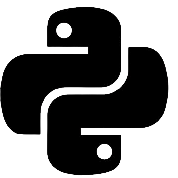
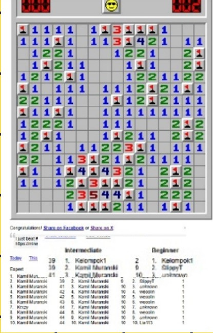
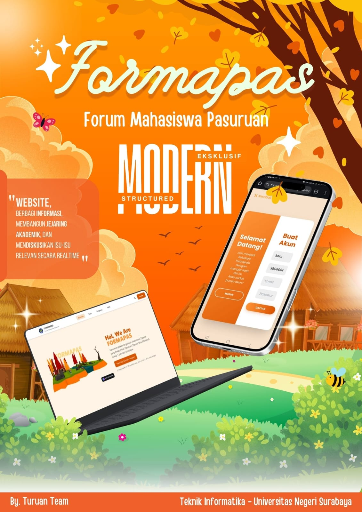

I'm a web developer-to-be who loves bringing ideas to life, both visually and logically. My freelance journey has given me a strong confidence in frontend development and UI/UX design, but I'm just as comfortable diving into backend routing, APIs, and complex logic.
https://github.com/Firzakrn/Masjid-Agung-Gresik.git
https://github.com/yuriaja/WEB-METLEAF-BELAJAR-MATEMATIKA-ITU-MUDAH.git

https://github.com/Firzakrn/Minesweeper-AI.git

https://github.com/Firzakrn/FormapasWeb.git
I am flexible to work in any environment and fully commit to putting maximum effort into everything I do.
Contact Me ↗